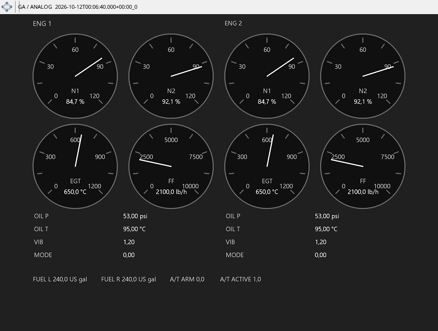

N1 i N2 pokazuj¹ obroty odpowiednich zespo³ów silnika, EGT temperaturê gazów, a fuel flow chwilowy przep³yw paliwa. ŒledŸ je razem podczas rozruchu, wzrostu ci¹gu i wy³¹czania. Nie sumuj wskazania przep³ywu tak, jakby by³o zu¿ytym paliwem. Ciœnienie i temperatura oleju pomagaj¹ porównaæ stan silników przy zbli¿onej mocy.
Vibration i thrust mode/A/T s¹ dodatkowymi polami zale¿nymi od danych samolotu. Zapisy starsze od obs³ugi SDK mog¹ mieæ podstawowe N1/N2, lecz nie mieæ wiarygodnego trybu ci¹gu. Dla B38M i A320 aplikacja wybiera osobne EICAS/ECAM; panel ogólny s³u¿y pozosta³ym typom lub wymuszeniu Debug.
